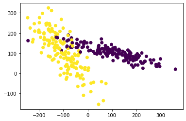
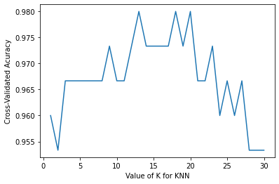
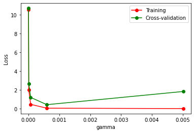

python-莫烦python学习笔记（scikit-learn） 官网 目录 3 如何选择机器学习方法 流程图
4 通用学习模式 导入数据集 查看iris的属性:
import numpy as npfrom sklearn import datasetsfrom sklearn.model_selection import train_test_split from sklearn.neighbors import KNeighborsClassifier 2 , :]
array([[5.1, 3.5, 1.4, 0.2],
[4.9, 3. , 1.4, 0.2]])
查看iris的分类结果:
array([0, 0, 0, 0, 0, 0, 0, 0, 0, 0, 0, 0, 0, 0, 0, 0, 0, 0, 0, 0, 0, 0,
0, 0, 0, 0, 0, 0, 0, 0, 0, 0, 0, 0, 0, 0, 0, 0, 0, 0, 0, 0, 0, 0,
0, 0, 0, 0, 0, 0, 1, 1, 1, 1, 1, 1, 1, 1, 1, 1, 1, 1, 1, 1, 1, 1,
1, 1, 1, 1, 1, 1, 1, 1, 1, 1, 1, 1, 1, 1, 1, 1, 1, 1, 1, 1, 1, 1,
1, 1, 1, 1, 1, 1, 1, 1, 1, 1, 1, 1, 2, 2, 2, 2, 2, 2, 2, 2, 2, 2,
2, 2, 2, 2, 2, 2, 2, 2, 2, 2, 2, 2, 2, 2, 2, 2, 2, 2, 2, 2, 2, 2,
2, 2, 2, 2, 2, 2, 2, 2, 2, 2, 2, 2, 2, 2, 2, 2, 2, 2])
train_test_split 分离数据集（测试集／训练集）： 0.3 )
array([1, 0, 2, 2, 2, 0, 2, 2, 2, 1, 1, 0, 0, 0, 0, 0, 0, 2, 0, 1, 0, 2,
0, 0, 1, 0, 0, 1, 1, 2, 0, 1, 2, 2, 2, 2, 2, 2, 1, 2, 0, 0, 2, 2,
0, 1, 1, 2, 2, 2, 2, 0, 0, 2, 1, 1, 1, 2, 2, 1, 0, 2, 1, 2, 0, 0,
1, 0, 2, 1, 2, 0, 1, 2, 1, 2, 1, 0, 0, 1, 1, 2, 2, 1, 0, 2, 1, 1,
0, 0, 1, 1, 1, 2, 0, 0, 2, 1, 2, 2, 1, 2, 1, 2, 2])
使用KNN算法进行分类 knn = KNeighborsClassifier()
array([2, 2, 0, 2, 1, 1, 1, 1, 1, 0, 0, 2, 0, 2, 1, 2, 0, 2, 2, 0, 1, 1,
1, 0, 0, 1, 1, 0, 2, 0, 1, 2, 0, 1, 2, 1, 0, 0, 2, 0, 0, 0, 0, 0,
1])
array([1, 2, 0, 2, 1, 1, 1, 1, 1, 0, 0, 2, 0, 2, 1, 1, 0, 2, 2, 0, 1, 1,
1, 0, 0, 1, 1, 0, 1, 0, 1, 2, 0, 1, 2, 1, 0, 0, 2, 0, 0, 0, 0, 0,
1])
看出预测结果与y_test基本相似
5 sklearn 的 datasets 数据库 from sklearn import datasetsfrom sklearn.linear_model import LinearRegression 4 , :])
array([30.00384338, 25.02556238, 30.56759672, 28.60703649])
array([24. , 21.6, 34.7, 33.4])
创造数据库 import matplotlib.pyplot as plt100 , n_features=1 , n_targets=1 , noise=10 )
6 model 常用属性和功能 from sklearn import datasetsfrom sklearn.linear_model import LinearRegression
model.coef_ 斜率 在fit之后输出的coef_和intercept_才会比较准确
array([-1.08011358e-01, 4.64204584e-02, 2.05586264e-02, 2.68673382e+00,
-1.77666112e+01, 3.80986521e+00, 6.92224640e-04, -1.47556685e+00,
3.06049479e-01, -1.23345939e-02, -9.52747232e-01, 9.31168327e-03,
-5.24758378e-01])
model.intercept_ 截距 36.45948838509036
model.get_params() 查看定义的参数 {'copy_X': True,
'fit_intercept': True,
'n_jobs': None,
'normalize': 'deprecated',
'positive': False}
model.score() 对model学到的东西进行打分 model.score(data_X, data_y)
0.7406426641094095
7 normalization 标准化数据 preprocessing.scale() from sklearn import preprocessing import numpy as np10 , 2.7 , 3.6 ],100 , 5 , -2 ],120 , 20 , 40 ]], dtype=np.float64)
array([[ 0. , -0.85170713, -0.55138018],
[-1.22474487, -0.55187146, -0.852133 ],
[ 1.22474487, 1.40357859, 1.40351318]])
经过标准化处理后, 各个属性取值范围基本一致
实例 from sklearn import preprocessing import numpy as npfrom sklearn.model_selection import train_test_split from sklearn.datasets import make_classification from sklearn.svm import SVC import matplotlib.pyplot as plt 300 , n_features=2 , n_redundant=0 , n_informative=2 ,22 , n_clusters_per_class=1 , scale=100 )0 ], X[:, 1 ], c=y)

X, y = make_classification(n_samples=300 , n_features=2 , n_redundant=0 , n_informative=2 ,22 , n_clusters_per_class=1 , scale=1000 ).3 )
0.9222222222222223
8 cross validation 交叉验证1 常规 from sklearn.datasets import load_irisfrom sklearn.model_selection import train_test_splitfrom sklearn.neighbors import KNeighborsClassifier4 )5 )
0.9736842105263158
交叉验证 from sklearn.datasets import load_irisfrom sklearn.model_selection import train_test_splitfrom sklearn.neighbors import KNeighborsClassifierfrom sklearn.model_selection import cross_val_score5 ) 5 , scoring="accuracy" )
array([0.96666667, 1. , 0.93333333, 0.96666667, 1. ])
0.9733333333333334
判断如何选择参数取值最佳 看精确度 from sklearn.model_selection import cross_val_scoreimport matplotlib.pyplot as pltrange (1 , 31 )for k in k_range:10 , scoring="accuracy" )"Value of K for KNN" )'Cross-Validated Acuracy' )

如果K过小, 会出现欠拟合问题
如果K过大, 会出现overfitting问题(过拟合)
9 cross validation 交叉验证2 过拟合问题 from sklearn.model_selection import learning_curve from sklearn.datasets import load_digitsfrom sklearn.svm import SVCimport matplotlib.pyplot as pltimport numpy as np0.01 ), X, y, cv=10 , scoring='neg_mean_squared_error' ,0.1 , 0.25 , 0.5 , 0.75 , 1 ])1 )1 )'o-' , color='r' , label='Training' )'o-' , color='g' , label='Cross-validation' )'Training examples' )'Loss' )'best' )
出现过拟合, 当样本数据量变大时误差率反而增加
10 cross validation 交叉验证3 from sklearn.model_selection import validation_curvefrom sklearn.datasets import load_digitsfrom sklearn.svm import SVCimport matplotlib.pyplot as pltimport numpy as np6 , -2.3 , 5 )'gamma' , param_range=param_range, cv=10 , 'neg_mean_squared_error' )1 )1 )'o-' , color='r' , label='Training' )'o-' , color='g' , label='Cross-validation' )'gamma' )'Loss' )'best' )

11 保存model from sklearn import svmfrom sklearn import datasets
SVC()
方法1: pickle 导出 import picklewith open ('save/clf.pickle' , 'wb' ) as f:
导入 with open ('save/clf.pickle' , 'rb' ) as f:0 :1 ])
array([0])
方法2: joblib 导出 import joblib'save/clf.pkl' )
['save/clf.pkl']
导入 clf3 = joblib.load('save/clf.pkl' )0 :1 ])
array([0])